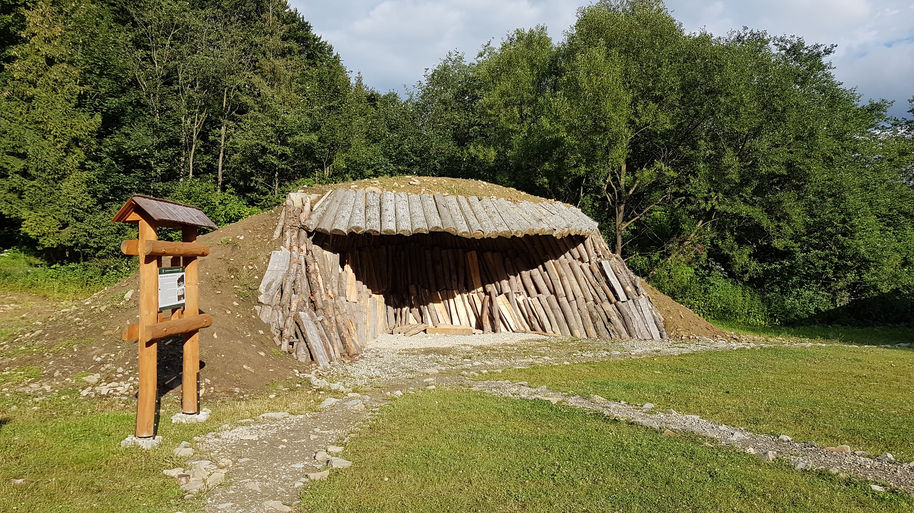

Węgiel drzewny jest w dzisiejszych czasach szeroko wykorzystywany. Ma zastosowanie w plastyce, przemyśle spożywczym, przemyśle kosmetycznym oraz jako paliwo do grillów. Wypał węgla odbywa się głównie w podkarpackich puszczach, gdzie węglarze mają prawo wycinać lasy i zwęglać pozyskiwane drewno. Jest kilka sposobów na jego wytwarzanie, ale wszystkie sprowadzają się do spalania różnych rodzajów drewna. Jednym ze sposobów jest wypalanie go w mielerzach, czyli stosach drewna ułożonych w kształcie kopuły i przykrytych gliną.
